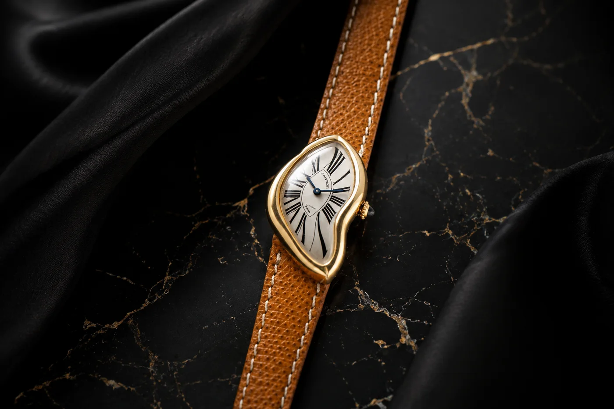

There is a watch that looks like it was left too close to a fire. The case sags. The dial pools sideways, its Roman numerals stretched as if the hour itself had melted. It should be a mistake. Instead it is one of the most coveted objects in the history of watchmaking — and the story of how it came to exist is even better than the way it looks. There is only one problem with that story: it probably isn’t true.
This is the Cartier Crash, and it is where a new series begins. The Object of Desire is about the pieces whose legend outgrew the metal — where the tale you tell at dinner is worth as much as the watch on the wrist. No object proves the point better than this one.

The Legend
Every great watch has an origin myth. The Crash has the best one. As the story goes, in 1967 a client walked into Cartier’s London maison carrying a wristwatch — an elegant, elongated Baignoire Alléngée — that had been caught in a fiery car crash. The heat and the impact had twisted the gold case into a surreal, molten shape. In the most dramatic tellings, the owner had been wearing it when he died in the wreck, and what survived was this beautiful ruin.
Rather than repair it, the legend says, Cartier was so struck by the accidental form that they immortalised it — recreating the deformed silhouette on purpose, and naming it, with a wink, the Crash. It is the perfect watch-collector story: tragedy, chance, and a house with enough taste to turn a wreck into art. It has been repeated for half a century. And it is, almost certainly, fiction.
The Truth
The Crash wasn’t an accident. It was a decision. According to The Cartiers — the definitive family history written by Francesca Cartier Brickell, great-great-granddaughter of the founder — there was no fatal crash and no melted Baignoire. The Crash was designed: a deliberate collaboration between Jean-Jacques Cartier, who ran Cartier London, and the maison’s longtime designer Rupert Emmerson.
London in 1967 was the centre of the creative universe — the Swinging Sixties, Surrealism in the galleries, rules being broken everywhere. Cartier’s London workshop was its most daring, and the Crash was its manifesto: a watch that looked like a Dalí painting had wandered onto a wrist. It wasn’t a wreck they preserved. It was a piece of pop art they invented.
Why the Myth Won
Here is the strange part: everyone now knows the accident probably never happened — and the watch is worth more because of the story, not less. The myth didn’t survive despite the truth. It survived because it’s the better tale, and because a watch this surreal demands a surreal origin.
Scarcity did the rest. No more than a few dozen original London Crashes are thought to exist; a limited run of around 400 followed in 1987, with small, feverishly-chased editions since. In April 2026, a circa-1987 London Crash sold at Sotheby’s for roughly $2 million after a nine-minute bidding war — a record for any Cartier watch, against a pre-sale estimate a fraction of that. You are not paying a fortune for a distorted gold case. You are paying for the legend it carries.
The most famous accident in watchmaking probably never happened. It didn’t need to — the story was always the point.
The Object of Desire · No. 001The Object of Desire
This is why the Crash opens the series. Stories To Watch has never been a shop that lists watches; it is a place that reads the stories they keep. The Crash is the purest expression of a truth every serious collector eventually learns: the object and its myth are inseparable, and often the myth is the more valuable of the two. A Rolex tells you the time. A Crash tells you a story — and dares you to find out whether it’s true.
That is the whole game. The most desirable objects aren’t the most expensive or the most complicated. They’re the ones you can’t stop thinking about — the ones that make you say I didn’t know that, and then I need to know more.
The Cartier Crash — Your Questions
What is the Cartier Crash?
A Cartier wristwatch with a deliberately distorted, melted-looking case and stretched Roman numerals, introduced by Cartier London in 1967. Its surreal, asymmetric shape made it one of watchmaking’s earliest pieces of radical, art-driven design — and today one of the rarest, most valuable Cartier watches in the world.
Is the Cartier Crash car-crash story true?
Almost certainly not. The legend — a Cartier Baignöire melted in a fatal 1967 London car crash and immortalised by the maison — is not supported by Cartier’s own family history. Per The Cartiers by Francesca Cartier Brickell, the Crash was a deliberate design, not a preserved accident. The car-crash tale endures because it’s the better story.
Who really designed it, and when?
It was created at Cartier London in 1967, through a collaboration between Jean-Jacques Cartier and designer Rupert Emmerson — a product of the workshop’s experimental, Surrealist-tinged, Swinging-Sixties spirit.
How rare is it?
Extremely. No more than a few dozen original 1960s London Crashes are believed to exist, plus a limited run of about 400 in 1987 and small editions since. Genuine early examples almost never come to market.
How much is a Cartier Crash worth?
Available examples have traded from roughly $150,000 to over $570,000, and in April 2026 a circa-1987 London Crash reached about $2 million at Sotheby’s — a Cartier auction record. Era, condition and provenance move the number enormously.
The Honest Takeaway
You will likely never own an original Crash — almost no one will, and we won’t pretend otherwise. But that isn’t the point of this piece. The point is the lesson the Crash teaches, which applies to every watch you’ll ever consider: buy the story you believe in, know which part of it is true, and understand that with the rarest objects, the myth is not a footnote — it’s the value.
If Cartier is where your curiosity is pulling you, that’s a door worth opening honestly — know what the modern pieces really cost, and find them from someone worth trusting.
Cartier · The Object of Desire
Where curiosity turns into a collection
The Crash is the myth; the modern Tank, Santos and Panthère are the ones you can actually chase. Read the honest Cartier guide, then find a verified source.
The Object of Desire
Read the story, know the truth — then find the one you can own
Independent stories · Real market prices · Verified dealers